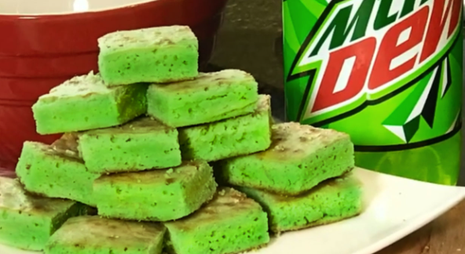

They originated from the plains of the Amazon
And from the peaks of Everest
The "dew" was extracted from Lime Spiders:
Brownie Recipe:
Step #1: Put 4 eggs in a big bowl.
Step #3: This is why they are called "brownies
Step #4: Pour your brownie egg soup into a big pot
Step #5: Boil your soup and add sugar while you boil
Step #6: Mix the sauce together
Step #7: Add your mountain dew and more green food coloring
Step #7: cook in oven for 1-90 hoursand then rub them with the special pan
Freeze them in the iron forge and in 2 hours it'll be done
Here's a picture of the final product:
